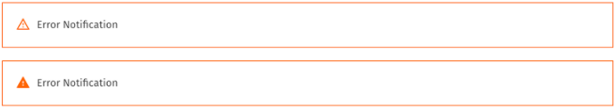
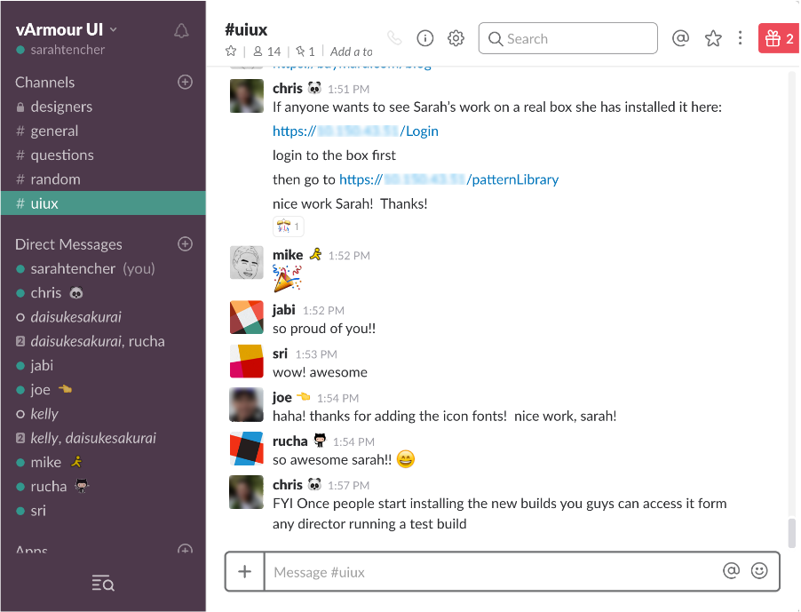

Sarah Tencher
vArmour Pattern Library
Why do we need a pattern library?
As products and companies grow, it is easy for design inconsistencies to creep in. Even with a design team of under 10 people, vArmour needed one source of truth to help promote consistency, communication and efficiency between and within the UX and UI teams.
Who is it for?
This library is valuable for the UX and UI teams both separately and together. The UX team can use it as a way to search for different components to use in designs instead of searching through existing wireframes, visual specs or the existing product. The UI team can us the library as a way to avoid repeated work and maintain consistency throughout the product. In the current product, there are two different search filters created by 2 different members of the same team — both components do the same thing and serve the same purpose, yet they look slightly different and together took twice as much time to create. By quickly looking in the library for a component, UI developers can avoid repeating work and wasting time. With one centralized library, a more common discourse can be created between the two teams as well.
How is it used?
As the UX team creates new components to suit their different needs, they will add them to the sketch library. As wireframes get sent to the UI team, developers can turn to this library to see if the components they need have been built yet or not. Ideally, once a component is built, it will be added to this library as a reference for everyone on both teams. For each component there is a description, living interactive examples, and a code snippets that can be directly copied and used to build the actual component. Using and maintaing the library will help avoid two (or more) people creating the same component which will not only save time and effort, but also maintain consistency throughout the product.
How is it implemented?
For seamless integration, the library was created using the tools and libraries that are used to create the actual vArmour product UI. This enables the library to use the code created and used by the UI team, making it a real reference as opposed to an idealized concept. This will also make it easier to update and maintain in the future. The library can be accessed from any director running a test build, making it easy for anyone in the company to find and use.
